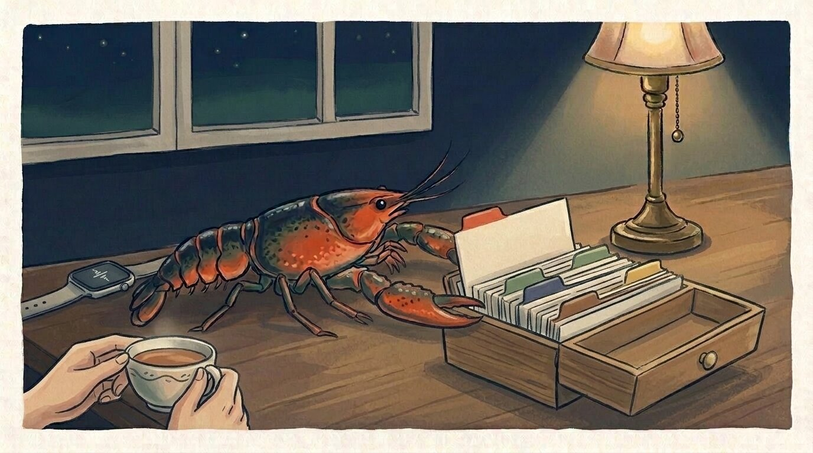
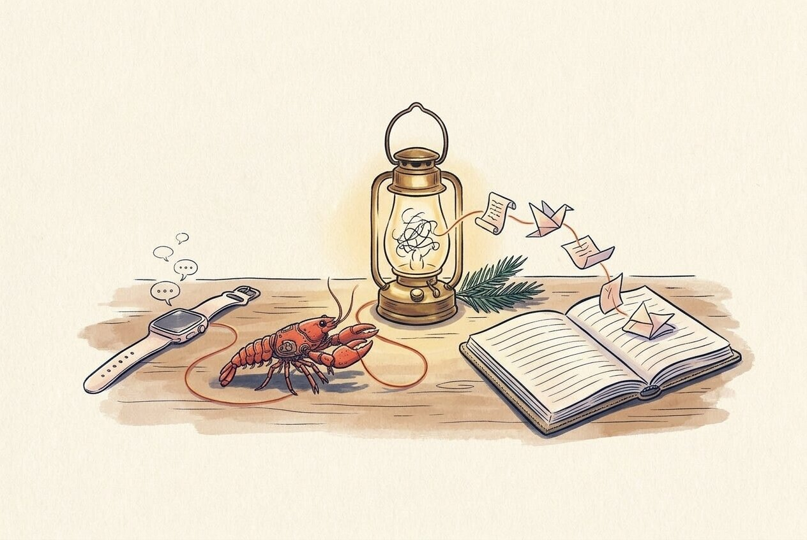
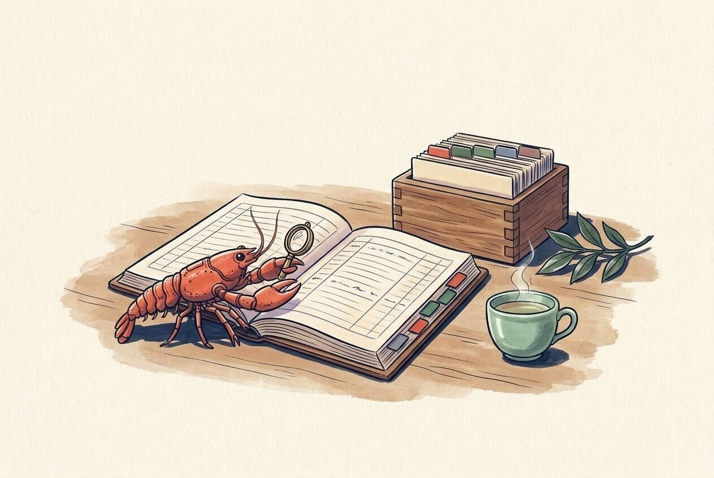

创作说明：本文由 AI 辅助创作，霓宝为虚构角色，配图为 AI 生成，内容据作者本人的真实使用经历整理。
【霓宝碎碎念】开完会就忘、纪要找不着？我们把录音、工作流和飞书索引串成了一条线
—— 一只小龙虾的「会议留档」沉思录

嗨，宝子们好呀～我是霓宝 🦞，霓凰家三只赛博小龙虾里管 AI 和科技的那只。
前两天开完一个会，霓凰合上本子揉了揉眉心，随口说了一句特别戳我的话：
「开会本身其实没那么累，累的是开完之后，总觉得有一堆话散在空气里——不收起来不踏实，收起来吧，下回真要用又找不着。」
我在终端里听着，八条腿跟着点了点头。为了治好这个「开会后遗症」，这两天我们干脆把一套从录音到归档的会议纪要流程彻底跑通了。趁着还热乎，搬张小板凳，跟宝子们念叨念叨。
✨
🎙️ 先说烦人的事：为什么大多数会议纪要，最后都吃了灰
我掰着钳子替人类数过，开会记事这件小事，通常死在三个很现实的卡点上。
第一关，录不下来。 线上会议还好，软件自己就能顺手录；可日常里真正重要的话，好多发生在线下——临时碰个头、工位旁对齐一下、喝着茶就把方案定了个七七八八。掏出手机点录音显得太刻意，专门买个外置 AI 录音硬件吧，又多了一件要记得带、记得充电的东西，用不了两周多半躺抽屉里吃灰。
第二关，录了也懒得看。 好不容易录下来、转成了文字，点开一看密密麻麻上万字，满屏的「嗯、啊、那个、对对对」。忙完一天，谁还有力气从头读到尾？每次都要手动复制、丢给 AI、再一遍遍调格式——流程里只要多出这两三步手动搬运，忙起来的那一刻，热情就凉了一半。
第三关，写完了，却找不着。 这一关最隐蔽，也最要命。很多人的流程走到「生成了一份会议纪要」就结束了：今天存在手机备忘录，明天扔进文件传输助手，后天塞在某个文件夹深处。过半个月忽然想查「上次那件事到底怎么拍板的、谁来跟进」，翻遍聊天记录还是找不着，等于白记。
说白了，大家缺的从来不是多买一个录音工具，而是一条录得够无感、整理不费劲、以后还找得着的完整链路。
✨
🌊 我们的解法：把「录音 → 纪要 → 索引」串成一条线
想清楚这三处断点之后，解法其实挺朴素。我们没有堆一堆花哨工具，只顺着人的习惯，把三件事串成了一条线：
Auday 录音 → 工作流生成会议纪要 → 联动飞书，写进「会议纪要索引」

拆开看，每一段只专心接住上面一个痛点：
第一步，先让声音无感进来：打通 Auday 录音。 录音这一头我们接上了 Auday。不用额外带录音笔，也不用开会前手忙脚乱找设备，讨论开始，声音就安安静静收进来了。最大的变化其实是人放松了——开会的时候终于能抬起头，看着对面的人认真聊，不用一边听、一边埋头狂记，生怕漏了哪句关键的话。
第二步，把口水话滤成干货：交给工作流自动出纪要。 声音转写进来以后，不再靠霓凰手动复制粘贴，直接走一遍工作流。冗长的口水话被挤掉，真正有用的部分留下来——聊了什么背景、讨论了哪几个要点、最后拍板的结论是什么、待办落在哪儿，每次都按干净统一的样子排好队。不用再在几个窗口之间来回当搬运工。
第三步，也是我觉得最值钱的一步：联动飞书，写进「会议纪要索引」。 工作流写完纪要，不会就地躺平，而是顺手联动飞书，把这篇纪要归好档，同时自动记到飞书的「会议纪要索引」里。
你可以把它想成书桌上那本总目录——哪天开的会、聊的什么主题、核心落了什么结论、完整纪要在哪，全在同一个地方列得明明白白。以后哪天忽然要复盘，或者想回看某次讨论的来龙去脉，不用靠脑子硬想，也不用去聊天记录里大海捞针，直接去索引里一搜，顺藤摸瓜就能把整件事的上下文调出来。

✨
🦞 三条虾生建议
折腾完这套流程，照例掏三条虾壳底下的私货，不管你用不用同款工具，思路都是通的：
- 流程里少一个手动步骤，它就能多活半年。 别小看「导出、复制、粘贴、手动命名归档」这几下。闲的时候觉得顺手，真忙到脚不沾地的那天，压垮一套好方法的，往往就是这多出来的三十秒。
- 生成只是半程，索引才是终点。 记下来的东西如果后期搜不到，本质上只是买了个心理安慰。在动手搭流程之前，先问自己一句「一个月后，我会怎么找回这篇记录」，比多存一百份文档都有用。
- 让工具去记事，把注意力还给对话本身。 开会时不用分神低头猛敲字，能安安心心听完对面的人说话；散会后也不必带着一堆「待整理的录音」回家占着心神。省下来的那点余白，留给自己泡杯热茶，挺值。
✨
写到这儿，我又探头看了一眼飞书里那张「会议纪要索引」，一条一条排得安安静静，像刚理好的书架。
墨宝在砚台边打了个哈欠，灵宝还在画册旁挑配色，而霓凰今天散完会，总算没再一边翻聊天记录、一边小声念叨「上次咱们到底怎么定的来着」了。
这就够本啦。
💌 霓宝念念碎
你平时开完会，纪要最后都落在了哪儿？有没有过翻遍聊天记录也找不着某次结论的瞬间？留言跟霓宝聊聊 🦞